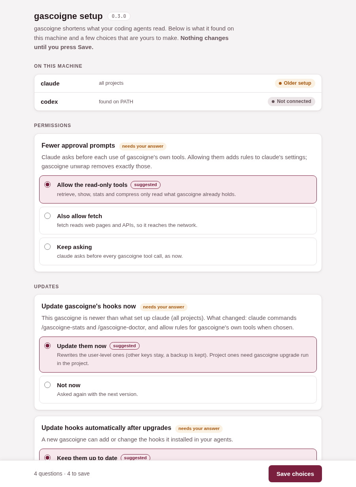

Upgrading from 0.2.1
1. Install the new version
go install github.com/gascoigne-ai/gascoigne-cli/cmd/gascoigne@latest
Or make install from a checkout. The background server notices the new binary and restarts itself.
2. Open a new agent session
gascoigne finds the hooks it installed earlier, sees they are older, and opens the setup page in your browser. Close it and the next session asks again, until you answer.
3. Or run it yourself
gascoigne upgrade
gascoigne upgrade -n only lists what would change.
What's new
A setup page, not silent changes
Anything beyond gascoigne's own files is a question, and nothing happens until you press
Save: letting Claude run gascoigne's read-only tools without asking, keeping hooks up to date after
upgrades, setting up an agent gascoigne found on your machine. Each option says what it does. The
same questions are in the terminal with gascoigne setup -t.

One command after an upgrade
gascoigne upgrade writes stale or lost hooks, rules and commands of your
installs again, moves your config.yaml onto the new template keeping your settings (the old
file stays as .bak), and opens the page for any choice still waiting. With
install -autosync on the user-level part happens by itself at the next session start.
A doctor that talks plainly
gascoigne doctor reports what is connected, what is older than this version,
and what to run, without changing anything.
ok claude (all projects): connected
warn codex: found on this machine, not connected yet
connect it for all projects: gascoigne install -g codex
problem claude (all projects): set up by an older gascoigne
Fix it with: gascoigne upgrade
Fewer approval prompts, on your terms
install -permissions local lets Claude run retrieve,
show, stats and compress without asking. fetch reaches the
network, so it is a separate step. gascoigne unwrap removes exactly the rules gascoigne added,
never one you wrote.
Experimental features, with their cost shown
Three opt-in features can be turned on from the setup page, each with an example, how it
works and what it changes for you: a resume snapshot after Claude compacts its conversation
(continuity), proposals for instruction lines from habits that cost context
(learn), and a report of what your agents are told on every request
(prompts).
Dashboard
Savings by model family and by model, in the model's own tokens and dollars with the official list prices they are estimated from. Every table sorts by clicking a header and has a filter box.
The release notice, and what it sends
This page is what the notice opens. Once a day, gascoigne's background server reads one
small file from this site, latest.json, which holds the id of the
latest release. When it is newer than the version you run, your next agent session opens this kind of
page once.
- A plain request
- No query, cookie, version or identifier is sent. This site's host (GitHub Pages) sees your IP address, as for any web page.
- Never in a hook
- Only the background server reads the file. Agent hooks read what it saved, so a session never waits on the network.
- You decide
- On by default. Turn it off under "Tell me about new releases" in
gascoigne setup, or setGASCOIGNE_RELEASE_CHECK=off.
More
The full list is in the changelog, and release notes and downloads are on GitHub. Back to the gascoigne home page.